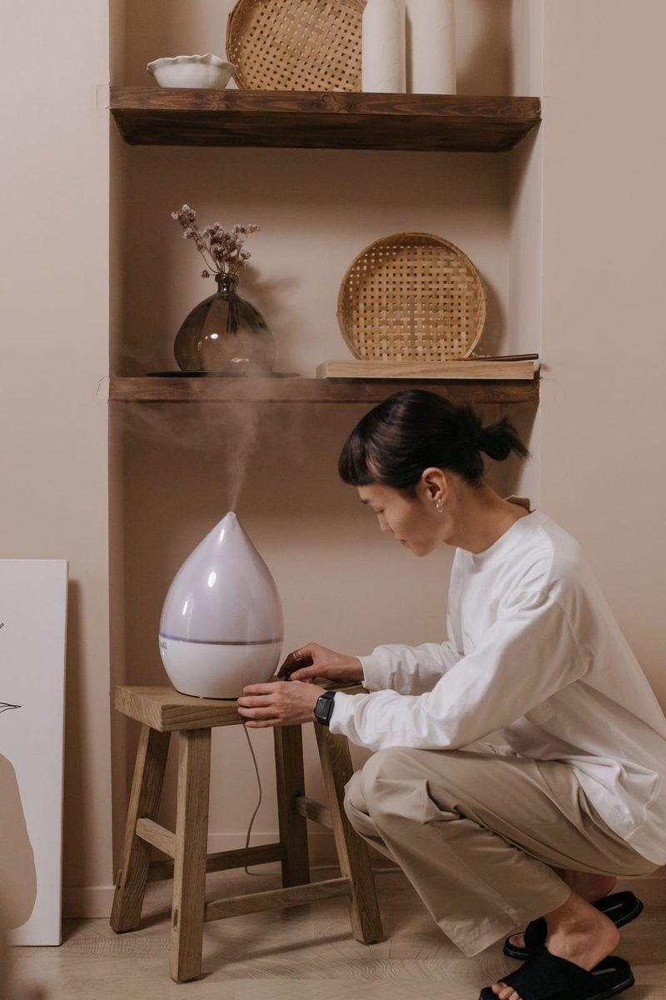

How Do Professionals Find Hidden Water Damage?
Technicians use infrared thermal cameras to spot cool, wet areas, then confirm with moisture meters. This finds hidden water inside Plano walls, ceilings and floors without tearing anything open first.
Early DetectionFind Hidden Water Before It Becomes a Bigger Problem
Water doesn't always show itself. It runs inside wall cavities, spreads under tile and hardwood, and soaks into insulation above ceilings. By the time a stain appears, the damage is often larger than it looks.
A professional moisture inspection helps you:
- Confirm whether there's a leak at all
- See exactly how far water has spread
- Avoid unnecessary demolition
- Give your plumber, adjuster or contractor clear information
- Know when a wet area is truly dry
How Thermal Imaging Finds Water
Wet materials are usually cooler than dry ones because water evaporating from a surface cools it. An infrared camera shows those temperature differences as color patterns, which helps reveal wet areas inside walls, ceilings and floors that look normal to the eye.
Thermal imaging water leak detection in Plano is a screening tool. A cool spot on camera could be water, or it could be a draft or missing insulation. That's why we always confirm with moisture meters.

The Tools We Use
| Tool | What It Does |
|---|---|
| Infrared thermal camera | Shows temperature patterns that suggest moisture |
| Pinless moisture meter | Scans drywall, wood and tile for moisture without damaging surfaces |
| Pin moisture meter | Takes precise readings in wood and drywall through tiny pin holes |
| Insulated probe meter | Reads moisture deeper inside wall cavities and flooring |
| Thermo-hygrometer | Measures temperature and relative humidity in the room |
Pairing an infrared camera with meter readings gives you an accurate picture, not a guess.
When To CallWhen to Get a Moisture Inspection in Plano
Mystery Musty Smell or Warped Baseboards
A musty odor, swelling baseboards or peeling paint near the floor often means hidden moisture. A mystery musty smell and warped baseboard moisture check can locate the source before mold spreads.
Sound of Water in the Wall
If you hear water dripping in a wall but see no puddle, a supply or drain line may be leaking inside the cavity. We'll trace where the water is going so your plumber knows where to open up.
High Water Bill With No Visible Leak
A sudden jump in your water bill can point to a hidden leak, including under the slab. Moisture mapping helps narrow the search.
After a Plumber Fixes a Leak
Once the pipe is repaired, you need to know how far the water traveled. Our inspection defines the dry-out area so nothing gets missed.
Before Closing Up Walls
Before drywall goes back up after a water loss, a thermal camera inspection confirms the walls are dry after the leak. Closing up wet framing is one of the main causes of mold.
Before Buying a Home
A pre-purchase moisture inspection can flag past or active leaks around bathrooms, kitchens, windows and ceilings.
Moisture Reports for Insurance Claims
Documentation makes a big difference on water claims. Our moisture readings are documented with:
- Thermal images and regular photos of each affected area
- A moisture map showing readings room by room
- Notes on likely source and affected materials
- Room humidity and temperature readings
This gives your adjuster and any contractor a clear starting point. Need a moisture report for an insurance claim in Plano? Ask when you book.
Next StepsWhat Happens After the Inspection
If we find water, you'll know exactly what's wet and what isn't. From there, we can start water mitigation right away or give you the information to share with your plumber or insurer. If we find mold, our mold remediation team can take the next step.